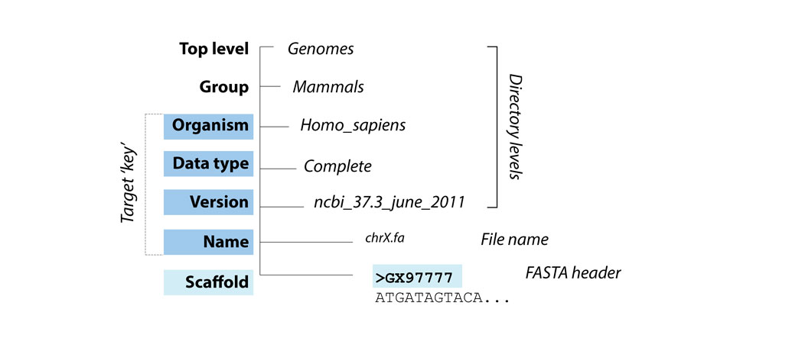
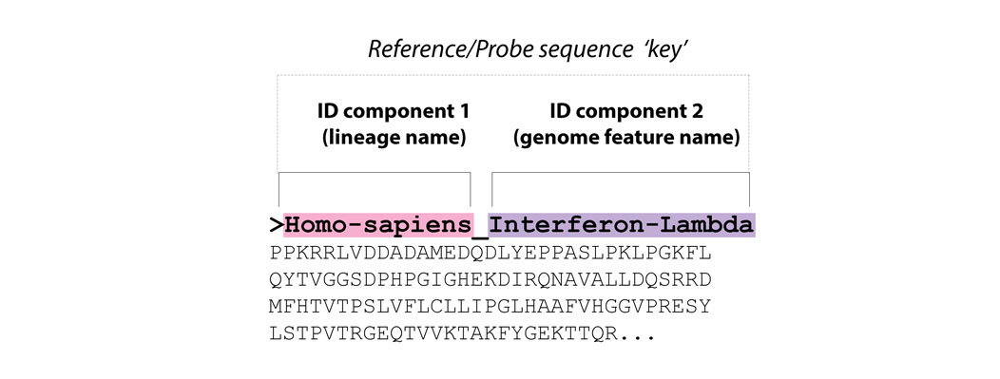
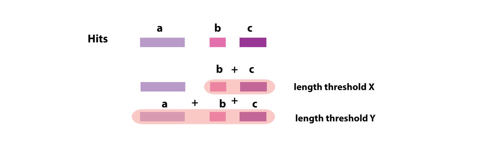

Setting up the DIGS tool environment
Before running DIGS tool, it is necessary to:
- Install software requirements
- Set environment variables
- Set up target libraries
- Create project-specific sequence libraries
- Create a project-specific 'control file'
The sections below provide information about each step.
1. Software requirements
Scripting language:
The DIGS tool requires PERL.
The PERL DBI (database interface)
module should be installed via CPAN if it is not part of your native PERL distribution.
Similarity searches:
The DIGS tool uses the freely available
BLAST+
package to perform sequence similarity searches.
Relational database management system (RDBMS):
The DIGS tool uses the MySQL relational database management system.
MySQL Community Server
is a free to use version of this program.
DIGS tool:
The latest version can be obtained here.
It can be installed on LINUX or UNIX systems.
Accordingly, installation on Macintosh OSX and Windows 10 and above should be possible, but I have not investigated this personally.
2. Setting up your local environment for DIGS
The DIGS tool requires users to set four environment variables in their home environment:
| Name | Definition |
|---|---|
| $DIGS_GENOMES | Path to the top-level of the 'target-databases' directory (see below) |
| $DIGS_HOME | Path to the DIGS-Tool directory |
| $DIGS_MYSQL_USER | Your mysql user name |
| $DIGS_MYSQL_PASSWORD | Your mysql password |
Note that one of the environment variables is the path to the 'target-databases' directory. DIGS requires that all target sequence databases relevant to the investigation being performed are contained within this folder. The target genomes directory has a simple, pre-defined subdirectory structure (see section immediately below this one).
Once environment variables have been set, you should be able to run the DIGS tool script with -h (help) option as shown here:
giff01r@Alpha:~/DIGS/DIGS-tool$ ./digs_tool.pl -h'
This should print the DIGS input help page to the console:
### DIGS version 1.13.2
### usage: ./digs_tool.pl m=[option] -i=[control file] -h=[help]
### Main functions
-m=1 Prepare target files (index files for BLAST)
-m=2 Do DIGS
-m=3 Reassign loci
-m=4 Defragment loci
-m=5 Consolidate loci
### Summarising target databases
-g=1 Summarise targets (brief summary, by species)
-g=2 Summarise targets (long, by individual target file)
### Managing DIGS screening DBs
-d=1 Import tab-delimited data
-d=2 Flush core tables
-d=3 Drop tables
-d=4 Drop a screening DB
-d=5 Append data to 'digs_results' table
-d=6 Extract sequences using tabular file
Target path variable '$DIGS_GENOMES' is set to '/home2/db/digs_genomes'
3. Set up target libraries
The 'target database directory' should have five levels, as shown below.

The top directory level should be the path specified under the DIGS environment variable ($DIGS_GENOMES). The top two directory levels can be named anything. The bottom three levels should contain directories with names pertaining to the data type (i.e. low coverage, assembly), version, and organism name (Latin binomial with underscore – e.g. Homo_sapiens), of the sequence data files they contain*.
In the above example, the file 'chrX.fa' would be under the path:
$DIGS_GENOMES/Mammals/Homo_sapiens/Complete/ncbi_37.3_june_11/ChrX.fa
Target databases can be indexed for BLAST searching using the DIGS tool, by executing as follows:
./digs_tool.pl –m=1
This will initiate a console-based interactive process in which the target database folder is scanned, and genomes that require indexing for BLAST are identified.
4. Set up project-specific sequence librarie
DIGS requires a library of FASTA-formatted sequences, called the 'reference sequence library'. This library is used a source of 'probes' for screening, and also provides a means of classifying hits (i.e. similar sequences) identified in these screens.

The DIGS tool uses a simple rule to capture data from the headers of FASTA-formatted reference (and probe) sequences, in which everything to the left of the last underscore in the FASTA header is taken as the 'species name' and everything to the left is taken as the 'genome feature name'.
A subset of reference sequences should be selected as probes. The entire reference library can be used - in which case there is no need to create a separate file – but it is often sufficient to use only a subset of sequences from the reference sequence library, in which case, a separate file containing this subset should be created. The path to this file is specified in the DIGS control file.
5. Create a project-specific control file
The DIGS control file is a text file that specifies parameters and paths for DIGS.
Control files are structured as NEXUS-style blocks delineated by BEGIN and ENDBLOCK tokens as shown below.
Begin SCREENDB;
db_name=erv_lenti;
mysql_server=localhost;
ENDBLOCK;
BEGIN SCREENSETS;
query_aa_fasta=/home/rob/DIGS/projects/lenti-probes.DIGS.faa;
reference_aa_fasta=/home/rob/DIGS/projects/ERV-reference.DIGS.faa;
bitscore_min_tblastn=60;
consolidated_reference_aa_fasta=/home/rob/DIGS/projects/;
output_path=./tmp/;
seq_length_minimum=50;
defragment_range=10;
#query_na_fasta=/home/rob/DIGS/projects/lenti-probes.fna
#reference_na_fasta=/home/rob/DIGS/projects/lenti-probes.fna
#bitscore_min_blastn=30;
ENDBLOCK;
BEGIN TARGETS;
Mammalia/
ENDBLOCK;
Note that not all parameters will need to be defined for every screen.
Table: Parameters defined in the DIGS control file
| Parameter | Definition |
|---|---|
| db_name | Name of the project-specific screening database |
| mysql_server | name of the mysql_server to use (set to 'localhost' to use local database) |
| query_aa_fasta | Path to file with amino acid probe sequences |
| reference_aa_fasta | Path to file with amino acid reference sequences |
| query_na_fasta | Path to file with nucleic acid probe sequences |
| reference_na_fasta | Path to file with nucleic acid reference sequences |
| bitscore_min_tblastn | Minimum bit-score of tBLASTn hit to extract |
| bitscore_min_blastn | PMinimum bit-score of BLASTn hit to extract |
| seq_length_minimum | Minimum length of sequence to extract |
| defragment_range | Range within which two BLAST hits in the target sequence will be merged |
Performing DIGS and working with project databases
This section covers a range of different aspects of the database-integrated screening (DIGS) process:
- Running an in silico screen
- Investigating screening results via a GUI SQL client
- Updating the reference sequence library & reclassifying data in the 'digs_results' table
- Incorporating additional tables into a DIGS project database
- 'Consolidation': Merging & reclassifying hits in the DIGS results table.
1. Running an in silico screen
Run the DIGS tool as follows.
./digs_tool.pl -m=2 -i input.ctl
This will initiate the screening process. A progress log is reported to the screen:
Connecting to DB: eve_1_parvoviridae
Created report directory
Path: './tmp/result_set_38612_1618435290'
Probe sequences: 22 amino acid FASTA sequences
Reference library: 39902 amino acid sequences
Targets: 1866 target files
Previous queries: 41052 previous queries
Skipped in set: 41008 (of 41052)
Searches to run 44
### Starting database-integrated genome screening
tblastn: 1: 'Eurynorhynchus_pygmeus' (GCA_003697955, low_coverage)
target: 'GCA_003697955.1_ASM369795v1_genomic.fna'
probe: 'NC_001401-AAV2_NS'
# 2 matches to probe: NC_001401-AAV2, NS
# 0 matches above threshold (excluded: 0 < length; 2 < bitscore)
# done 1 of 44 queries (%2.27)
tblastn: 2: 'Hypophthalmichthys_nobilis' (HypNob1.0, low_coverage)
target: 'GCA_004193235.1_HypNob1.0_genomic.fna'
probe: 'NC_001401-AAV2_NS'
The first few lines of output report the properties of the probe, reference and target sequence libraries that compose the screen.
In addition, the status of the screen is reported - of all the individual BLAST searches that comprise the screen, how many have been performed, and how many are still outstanding.
Run with the -v (verbose) option for more granular logging.
2. Investigating screening results using an SQL client
The relational database component allows efficient monitoring and summarising the output of screening. Particularly when the screening project database is enriched with additional data (e.g. taxonomic data, see below) this greatly enhances users capacity to interrogate the data generated by screening.
A MySQL client with a graphical user interface (e.g. SequelPro) can be used to connect to the screening database.
The following examples illustrate some of the basic ways in which the RDBMS can be used to monitor and query screening results.
For example, to get counts of matches to each kind of sequence in our reference library:
SELECT DISTINCT assigned_name, assigned_gene, COUNT(*) AS Number
FROM digs_results
WHERE bitscore >= 60
GROUP BY assigned_name, assigned_gene
ORDER BY assigned_name, assigned_gene
3. Updating reference sequences and reclassifying results
./digs_tool.pl -m=3 -i ../projects/eve/eve_1_parvo.ctl
Connecting to DB: erv_lenti
Created report directory
Path: './tmp/result_set_33636_1618435124'
Reference library: 39902 amino acid sequences
Enter a WHERE statement to limit reaasign (Optional) :
4. Incorporating additional tables into a DIGS project database
To add a table with virus taxonomy:
giff01r@Alpha:~/DIGS/DIGS-tool$ ./digs_tool.pl -d=1 -i ../projects/eve/eve_1_parvo.ctl
######################################################################
# #
# DIGS (version: 1.13.2) 1.13.2 #
# Database-Integrated Genome Screening #
# Robert J. Gifford #
# #
# #
######################################################################
Connecting to DB: erv_lenti
#### WARNING: This function expects a tab-delimited data table with column headers!
Please enter the path to the file with the table data and column headings
: ../projects/eve/tabular/ncbi_virus_taxonomy.txt
5. Merging hits in the DIGS results table into larger sequences
When relying on sequence similarity as a means of recovering the sequences of related genome features, a limitation is that the sequences of many interesting genome features are only partially conserved, and large regions of sequence within these features may be rearranged or divergent.
However, when two or more conserved features occur contiguously, their relationship can be used to determine the coordinates of a more complete sequence for the genome feature of interest.
For example, retroviruses are comprised of three major coding domains (gag, pol, env - in that order), flanked by terminal LTRs that are usually (though not always entirely) non-coding. But while this is the standard form of an integrated retrovirus ('provirus), endogenous retroviruses (ERVs) frequently have much complex genome arrangements, with many being fragmentary or mosaic in structure, and large regions of the integrated provirus often being highly divergent from anything seen previously.
Accordingly, it makes semse to screen first using individual features (i.e. Gag, Pol, Env polypeptides, plus LTR nucleotide sequences), as probes and references, then to 'consolidate' the hits to these probes into a larger sequences comprised of the hits, plus the intervening sequences. At the same time, we can record the relationship between the component parts of the merged sequence, where merging occurs.
The DIGS tool can be used to implement a ‘consolidation’ of this kind. Contiguous hits in the ‘digs_results’ table are merged based on whether they are within a user-defined distance of one another.

Running the consolidation process produces a set of merged sequences, and also classifies these sequences using the same approach applied when generating the digs_results table. The results - i.e. a non-overlapping set of sequences, merged as determined by user-specified rules - are entered into the 'loci' table (see the database schema page for details). A separate reference sequence library that is appropriate for classifying the longer sequences should be used for the consolidation, and is specified by a distinct parameter (see section 4 in the set-up stages above).
The loci table contains most of the same fields as the digs_results table, but also includes a 'locus_structure' field that records the relationship between merged hits, including their orientation.